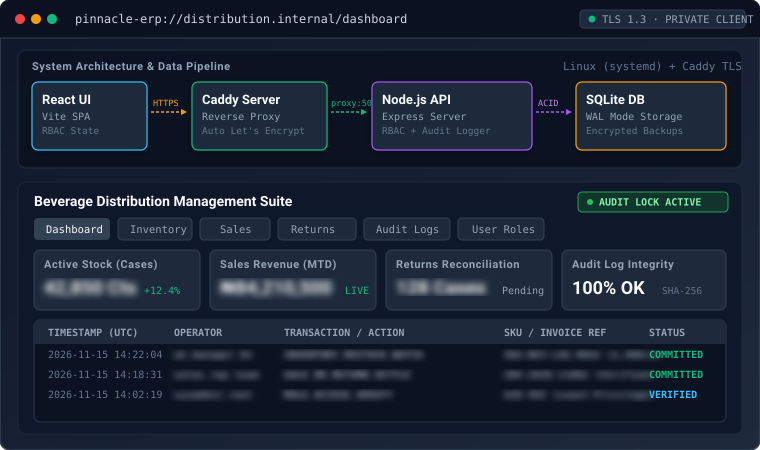

Software Development & Applied AIReact · Node.js · Client System
Pinnacle ERP - Full-Stack Inventory & Sales System for a Beverage Distributor
Built for a real client - manages inventory, sales, returns, audit logs, and user roles for a beverage distribution business.
- Role-based access control (RBAC) re-checked against live user sessions on every request, forced change of default credentials, and one-time password recovery codes.
- Comprehensive immutable audit logs recording every state change, atomic transactional operations, and specialized sale-or-return reconciliation workflows.
- Hardened Linux production deployment behind Caddy TLS reverse proxy with sandboxed systemd service isolation and automated encrypted off-site backups.
ReactNode.jsSQLiteCaddy TLSLinux HardeningRBACACID
Private repository (client work)

Node.js -> SQLite, Linux + Caddy TLS" style="width: 100%; height: auto; display: block;" loading="lazy">
# Architecture: Client Production Deployment
React UI (Vite) → Caddy Reverse Proxy (Auto TLS)
→ Node.js / Express API (RBAC & Audit Logs)
→ SQLite WAL Engine (ACID Integrity)
Host: Hardened Linux (systemd sandbox)
Enterprise NetworkingWindows Server 2025 · pfSense · RADIUS
Enterprise IT Infrastructure Lab: Multi-Site Active Directory & Network
Designed to mirror corporate multi-site IT environment. Multi-site corporate infrastructure across Windows Server 2025 AD DS, pfSense firewalls, centralized RADIUS AAA, IPsec IKEv2 VPN, and Zero-Trust mesh routing.
# Multi-Site Architecture & ZTNA
HQ: 192.168.10.0/24 pfSense: 192.168.23.138
Branch: 192.168.20.0/24 pfSense: 192.168.23.139
NPS (RADIUS) → IKEv2 IPsec (EAP-RADIUS)
WireGuard Mesh → Tailscale 100.106.74.113
- Departmental OUs (IT, Management, Marketing, Sales) with deletion protection and PowerShell least-privilege password delegation.
- Windows NPS (RADIUS) authenticates remote engineers over enterprise IPsec IKEv2 VPN with internal X.509 PKI certificates.
- Tailscale WireGuard Zero-Trust overlay router for secure out-of-band administration without exposing RDP to WAN.
- GPOs enforcing password length, idle machine lockouts (5 min) and restricted Control Panel, pushed with gpupdate /force.
Windows Server 2025AD DSpfSenseRADIUS (NPS)IPsec IKEv2TailscaleGPO
IT Monitoring & OperationsElastic Stack · zero cloud
Elastic Stack mini-SOC: multi-layer telemetry
Designed for IT operations monitoring - logs, alerts, and dashboards. A local SOC correlating network NIDS alerts, endpoint telemetry and container logs into unified indices with real-time detection rules.
# query rule, runs every 1m on suricata-*
event.dataset: "suricata"
AND suricata.eve.alert.severity <= 2
- Three custom Logstash pipelines: Suricata NIDS (EVE JSON), osquery host telemetry (UNIX date parsing) and Grok-parsed Kubernetes HTTP logs.
- Daily indices per source feeding one Kibana overview dashboard with automated high-severity alert queries.
- Environment variable credential security; diagnosed and resolved 12 operational pipeline issues across the stack.
ElasticsearchLogstashKibanaSuricata NIDSosqueryMinikube
Cloud Infrastructure19 labs · AWS security architecture
AWS Cloud Infrastructure Architecture - 19 Labs
A 19-lab series on building resilient VPCs, cryptographic key vaults, threat detection and zero-internet-exposure transit endpoints.
# KMS CMK envelope encryption & VPC isolation
KMS Key: arn:aws:kms:...:key/cmk-db-vault
VPC Flow Logs → CloudWatch (/aws/vpc/flowlogs)
PrivateLink Endpoints: com.amazonaws.vpce.*
- Public/private subnets, NAT Gateways, inter-VPC peering, and private transit via AWS PrivateLink VPC Endpoints and S3 Gateway Endpoints.
- AWS KMS Customer-Managed Key (CMK) database envelope encryption and AWS Secrets Manager automated credential rotation.
- AWS GuardDuty ML threat intelligence for simulated reconnaissance, DNS exfiltration and compromised EC2 detection; VPC Flow Logs to CloudWatch.
Amazon VPCIAMKMSGuardDutySecrets ManagerFlow LogsAurora
Cloud InfrastructureMicrosoft Azure · DevSecOps
Azure Cloud Infrastructure, Identity & CI/CD
Enterprise cloud identity first, hardened virtual network infrastructure, and an automated GitOps deployment pipeline.
# Entra ID RBAC + Trusted Launch VM
Role: Contributor (Scoped to RG-SecNet)
Security: Secure Boot + vTPM + NSG Rules
CI/CD: GitHub Actions → Azure Static Web Apps
- Least-privilege Microsoft Entra ID user with scoped Contributor role, UPN management and MFA via Microsoft Authenticator.
- Windows Server 2025 VM with Trusted Launch (Secure Boot, vTPM), Network Security Groups (NSGs), Defender for Cloud and boot diagnostics.
- Automated DevSecOps pipeline deploying React/Vite applications to Azure Static Web Apps through GitHub Actions with staging previews.
Entra IDRBACMFANSGDefender for CloudGitHub Actions
Software Development & Applied AIPython · SQLite · HIPAA Compliance
Medicare Hospital Management System - HIPAA-Compliant
Patient records, appointments, and access controls with HIPAA data handling. A modular healthcare management system with strict role-based access control, medical record privacy boundaries and automated unit testing.
# HIPAA patient privacy enforcement
if not has_appointment(doctor_id, patient_id):
raise UnauthorizedAccessException("Access Denied")
# Automated verification: 4/4 passing (test_system.py)
- Doctors can only access records of patients with active/past appointments; unauthorized access attempts are blocked at the query level.
- Role-segregated CLI menus across 4 distinct actors (Admin, Doctor, Receptionist, Patient) with administrative dynamic fee governance.
- Full unit test suite (test_system.py) validating doctor fee controls, appointment booking, billing math, and HIPAA access boundaries.
PythonSQLiteHIPAARBACUnit Testing
Software Development & Applied AIPython · SQLite · ACID Integrity
ShopHub: Transactional E-Commerce System
Orders, inventory, and payments with ACID transactional integrity. A relational e-commerce management platform enforcing atomic checkout transactions, inventory race condition protection, and regex sanitization.
# Atomic ACID checkout pipeline
BEGIN TRANSACTION;
UPDATE inventory SET stock = stock - ? WHERE id = ?;
-- Rollback immediately on inventory underflow
COMMIT;
- Atomic database transactions (BEGIN / COMMIT / ROLLBACK) that prevent inventory overselling and concurrency conflicts.
- Defensive regex input validation enforcing RFC-compliant email, exactly 11-digit phone numbers, and length-enforced credentials.
- Administrative business intelligence audits: revenue calculations, low stock triggers (<10 items) and customer spend rankings.
PythonSQLiteACIDData IntegrityInput Sanitization
IT Automation & DevOpsFastAPI · Flask · Python
IT Automation & Incident Response Suite (FastAPI / Flask / Python)
Automated security triage endpoints, real-time log dashboards and network reconnaissance tools that replace manual analyst intervention.
# FastAPI SecOps Gatekeeper (@app.post)
if alert.severity_score >= 8:
trigger_firewall_block(alert.ip_address)
# HAR Sanitizer: Strips Auth & Cookies
- FastAPI SecOps Gatekeeper: RESTful webhook receiving threat alerts, validating schemas via Pydantic, and executing automated firewall IP blocking for critical threats (≥8/10).
- Flask SOC Dashboard: Parses raw delimited firewall logs (firewall.log) into normalized dictionaries and real-time visual status cards.
- Multithreaded port scanner (ranges and CIDRs), automated brute-force containment playbook, HAR PII/credential sanitizer and Cisco ACL simulator.
FastAPIFlaskPydanticIncident ResponseOSINTAutomation
Enterprise NetworkingGNS3 · Cisco vIOS & IOS 15.9
Enterprise Networking & Inter-VLAN Routing (GNS3 / Cisco)
A four-zone segmented enterprise network where policy is enforced via named extended ACLs and proven through deep-packet Wireshark captures.
Users 10.0.10.0/24 medium trust
Servers 10.0.20.0/24 restricted
Mgmt 10.0.30.0/24 IT only
DMZ 10.0.40.0/24 untrusted
# DMZ_SECURITY_POLICY
10 deny ip 10.0.40.0 0.0.0.255 10.0.20.0 0.0.0.255
- Named extended ACLs: DMZ cannot initiate inward traffic, staff reach servers on HTTP/HTTPS only, and only IT reaches Management.
- Centralized multi-pool DHCP servers (POOL-10, POOL-172, POOL-192), PVST Spanning Tree and PortFast edge security.
- Switch management restricted to SSH with AES-CTR ciphers; verified per zone with ping, wget and a Wireshark PCAP capture.
VLANsACLsSSH hardeningWireshark PCAPGNS3
Software Development & Applied AIGoogle Gemini 2.5 Flash · Python
Mini-LLM QA Engine
A context-grounded Question-Answering application powered by Google Gemini 2.5 Flash with secret isolation and anti-hallucination guardrails.
# Grounded Gemini 2.5 Flash QA Engine
Knowledge Base → Domain Context Grounding
google-genai SDK → Gemini 2.5 Flash
Guardrails → Zero-Hallucination Fallback
- High-performance context-grounded generation using the official google-genai SDK and Gemini 2.5 Flash model.
- Strict anti-hallucination guardrails conditioning completions on verified company and services knowledge bases.
- Interactive CLI query agent with environment variable secret isolation via python-dotenv.
Python 3.10+Google Geminigoogle-genaiRAGLLM Guardrails
Cloud InfrastructureKubernetes · Terraform · IaC
Kubernetes & Terraform Infrastructure-as-Code
Declarative cluster orchestration, Zero-Trust NetworkPolicies, and Pod Security Standards for hardened container workloads.
# Pod Security Standards (Restricted)
securityContext:
runAsNonRoot: true
readOnlyRootFilesystem: true
capabilities: { drop: ["ALL"] }
# NetworkPolicy: Default-Deny Ingress/Egress
- Pod Security Standards enforcement preventing privilege escalation, enforcing unprivileged UIDs, and locking down root filesystems.
- East-West micro-segmentation with Kubernetes NetworkPolicies enforcing default-deny ingress/egress across namespace boundaries.
- HashiCorp Terraform declarative Infrastructure-as-Code baselines for reproducible, secure cloud resource provisioning.
KubernetesTerraformIaCNetworkPolicyPod SecurityRBAC
Enterprise NetworkingCisco Packet Tracer
Packet Tracer Labs: Enterprise Network Simulation
An end-to-end multi-layer office network simulation with centralized services, role-based access, and smart-building infrastructure.
net 192.168.10.0/24 gw .1 server .2
services: DHCP · DNS · HTTP · FTP (RBAC) · email · IoT
Fault Diagnosis: DHCP lease misdirection fixed
- Edge router, multilayer core and Admin, IT and Management switches plus an IoT smart-building branch.
- Configured central DHCP, DNS, HTTP, FTP (role-based access) and email services; diagnosed and fixed a DHCP lease misdirection fault.
- Device security hardening, port security, SSH interface terminal configurations, and VLAN segmentation.
Packet TracerCisco IOSDHCPDNSRBACIoT